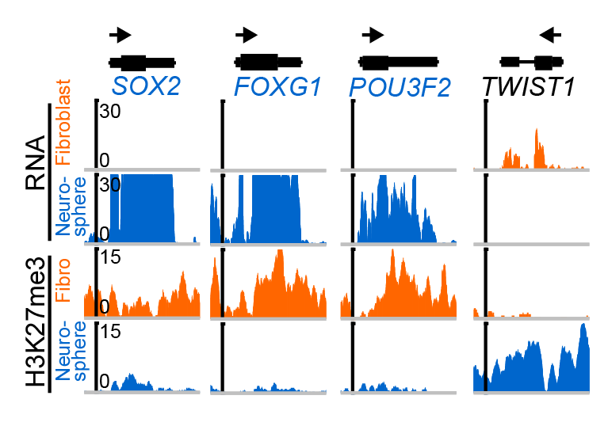
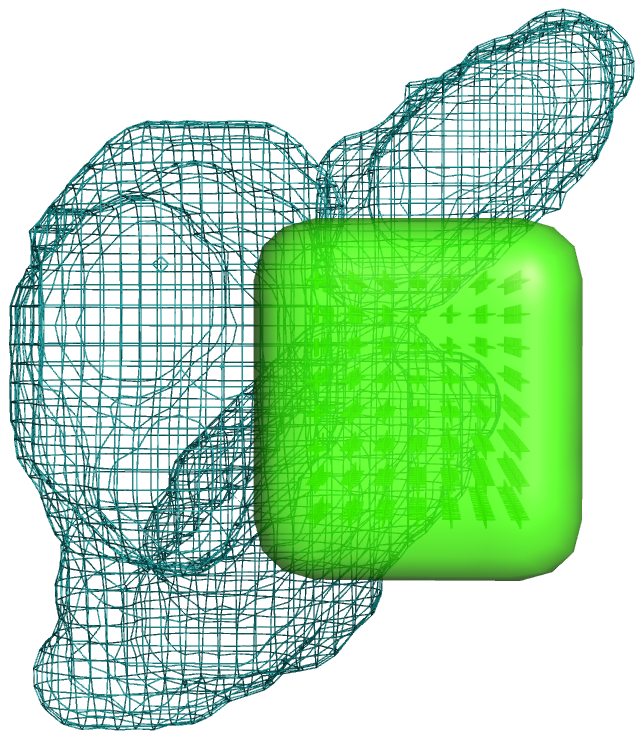
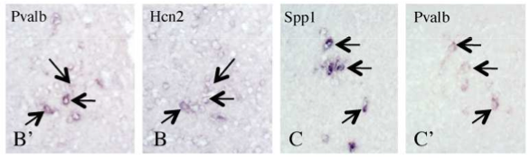

Projects
| 
|
Identifying transcription factors that can convert cell identity. Harold Weintraub and colleagues found nearly thirty years ago that artifically expressing a single transcription factor, MyoD, in fibroblast cells can convert ("transdifferentiate") them to myoblasts. Since then, combinations of transcription factors have been discovered that can convert numerous other cell types, typically by empirically testing factors with a known developmental role in the goal cell type. We recently found that standard genomic methods (RNA-seq and ChIP-seq) can help identify conversion factors, as most are more strongly Polycomb repressed in the source cell and more highly expressed in the target cell. These results suggest that barriers between adult cell types, as depicted in Waddington's "epigenetic landscape", consist at least in part of differentially Polycomb-repressed transcription factors.
|
|
↑ SOX2, FOXG1, and POU3F2 are TFs that can convert fibroblasts (where they are more strongly Polycomb repressed) to neural stem cells (where they are more highly expressed). In contrast, TWIST1 is a TF implicated in epithelial to mesenchymal transition, a transdifferentiation-like process involved in cancer formation.
Davis and Eddy. PLoS One, 2013
|
Characterizing gene expression in novel brain nuclei. Gene expression in the mouse brain has been systematically characterized by in situ hybridization (ISH), and registered in the three-dimensional Allen Brain Atlas. I developed a computer program, ALLENMINER, that enables flexible searching of this expression data. In collaboration with Marco Celio (University of Fribourg), I use this program to characterize previously undescribed regions in the mouse brain, such as the parvalbumin-positive (PV1) nucleus of the lateral hypothalamus. This analysis aims to characterize the gene batteries that define cell identity.
|

↑ Candidate genes that express in the PV1 nucleus (green box) of the hypothalamus (shown in blue wireframe) were identified by ALLENMINER and validated by ISH.
Davis and Eddy. Bioinformatics 2009.
Girard, Meszar, Marti, Davis, Celio. Eur J Neurosci 2011.
|
Papers
-
Evolved Repression Overcomes Enhancer Robustness.
Preger-Ben Noon E, Davis FP, Stern DL. Dev Cell (2016). doi:10.1016/j.devcel.2016.10.010. (reprint).
-
Developmental acquisition of regulomes underlies innate lymphoid cell functionality.
Shih HY*, Sciume G*, Mikami Y*, Guo L, Sun HW, Brooks SR, Urban Jr JF, Davis FP, Kanno Y, O'Shea JJ. Cell (2016). doi:10.1016/j.cell.2016.04.029. (* co-first authors). (reprint).
-
Epigenomic landscapes of retinal rods and cones.
Mo A, Luo C, Davis FP, Mukamel EA, Henry GL, Nery JR, Urich MA, Picard S, Lister R, Eddy SR, Beer MA, Ecker JR, Nathans J. eLife (2016). 5:e11613. (reprint).
Raw data: GEO GSE72550
-
A metabolic switch for Th17 pathogenicity.
Davis FP, Kanno Y, O'Shea JJ. Cell (2015). 163:1308-1310 (commentary). (reprint).
-
Epigenomic signatures of neuronal diversity in the mammalian brain.
Mo A*, Mukamel EA*, Davis FP*, Luo C*, Henry GL, Picard S, Urich MA, Nery JR, Sejnowski TJ, Lister R, Eddy SR, Ecker JR, Nathans J. Neuron. (2015) 86(6): 1369-1384. (* co-first authors). (reprint)
Selected as Issue Highlight, previewed by Steve Henikoff.
Raw data: GEO GSE63137
-
NSF Workshop Report: Discovering General Principles of Nervous System Organization by Comparing Brain Maps Across Species.
Striedter GF, Belgard TG, Chen C, Davis FP, Finlay BL, Gunturkun O, Hale ME, Harris J, Hecht EE, Hof PR, et al.
Brain, Behavior and Evolution (2014). 83: 1-8. doi:10.1159/000360152 (reprint).
-
Transcription factors that convert adult cell identity are differentially Polycomb repressed.
Davis FP and Eddy SR. PLoS One (2013). 8(5): e63407. doi:10.1371/journal.pone.0063407 (reprint).
-
Cell-type specific genomics of Drosophila neurons.
Henry GL, Davis FP, Picard S, Eddy SR. Nucleic Acids Res (2012). 40 (19): 9691-9704. (reprint).
Designated feature article.
Raw data: GEO GSE37027
-
Phosphorylation at the interface.
Davis FP. Structure (2011). 19(12):1726-1727 (commentary). (reprint).
-
Gene expression analysis in the parvalbumin-immunoreactive PV1 nucleus of the mouse lateral hypothalamus.
Girard F, Meszar Z, Marti C, Davis FP, Celio M. Eur. J. Neurosci (2011). 34(12): 1934-1943. (reprint).
-
Proteome-wide prediction of overlapping small molecule and protein binding sites using structure.
Davis FP. Molecular Biosystems (2011). 7(2): 545-547. (reprint).
Selected for the Virtual Journal of Biological Physics Research.
Software: HOMOLOBIND
-
The overlap of small molecule and protein binding sites within families of protein structures.
Davis FP and Sali A. PLoS Computational Biology (2010) 6(2): e1000668. (reprint).
Designated feature research.
Database: PIBASE.ligands
-
A tool for identification of genes expressed in patterns of interest using the Allen Brain Atlas.
Davis FP and Eddy SR. Bioinformatics (2009) 25(13):1647-54. (reprint).
Software: ALLENMINER
-
MODBASE, a database of annotated comparative protein structure models and associated resources
Pieper U, Eswar N, Webb BM, Eramian D, Kelly L, Barkan DT, Carter H, Mankoo P, Karchin R, Marti-Renom MA, Davis FP, Sali A. Nucleic Acids Res (2008). (reprint).
Database: MODBASE
-
Host-pathogen protein interactions predicted by comparative modeling.
Davis FP, Barkan DT, Eswar N, McKerrow JH, Sali A. Protein Science (2007) 16: 2585-2596. (reprint) (supplementary text).
Software: MODTIE.
Data: 
-
DBAli tools: mining the protein structure space.
Marti-Renom MA, Pieper U, Madhusudhan MS, Rossi A, Eswar N, Davis FP, Al-Shahrour F, Dopazo J, and Sali A. Nucleic Acids Research (2007) 35: W393-7. (reprint).
-
The AnnoLite and AnnoLyze Programs for Comparative Annotation of Protein Structures.
Marti-Renom MA, Rossi A, Al-Shahrour F, Davis FP, Pieper U, Dopazo J, and Sali A. BMC Bioinformatics (2007) 8:S4. (reprint)
-
Modeling protein interactions by analogy: Application to PSD-95.
Korkin D, Davis FP, Alber A, Luong T, Shen MY, Lucic V, Kennedy MB, Sali A. PLoS Computational Biology (2006) 2: e153. (reprint)
-
Protein complex compositions predicted by structural similarity.
Davis FP, Braberg H, Shen MY, Pieper U, Madhusudhan MS, Sali A. Nucleic Acids Research (2006) 34:2943-2952. (reprint).
Software: MODTIE
-
MODBASE: a database of annotated comparative protein structure models and associated resources.
Pieper U, Eswar N, Davis FP, Braberg H, Madhusudhan MS, Rossi A, Marti-Renom MA, Karchin R, Webb BM, Eramian D, Shen MY, Kelly L, Melo F, Sali A. Nucleic Acids Research (2006) 34: D291-D295. (reprint).
Database: MODBASE
-
Localization of protein-binding sites within families of proteins.
Korkin D, Davis FP, Sali A. Protein Science (2005) 14: 2350-2360. (reprint)
-
The Optimal Size of a Globular Protein Domain: A Simple Sphere-Packing Model.
Shen MY, Davis FP, Sali A. Chemical Physics Letters (2005) 405: 224-228. (reprint)
-
PIBASE: a comprehensive database of structurally defined protein interfaces.
Davis FP and Sali A. Bioinformatics (2005) 21(9): 1901-1907. (reprint).
Database: PIBASE.
-
A structural perspective on protein-protein interactions.
Russell RB, Alber F, Aloy P, Davis FP, Korkin D, Pichaud M, Topf M, Sali A. Current Opinions in Structural Biology (2004) 14(3): 313-24. Review. (reprint)
-
MODBASE, a database of annotated comparative protein structure models, and associated resources.
Pieper U, Eswar N, Braberg H, Madhusudhan MS, Davis FP, Stuart AC, Mirkovic N, Rossi A, Marti-Renom MA, Fiser A, Webb B, Greenblatt D, Huang CC, Ferrin TE, Sali A. Nucleic Acids Res (2004) 32 Database issue: D217-22. (reprint).
Database: MODBASE
|
Software
|
I've written several programs, mostly for protein structure and gene expression analysis, and all are available at github.
|
 |
mdllabbook helps maintain a markdown-format lab notebook.
|
|
ALLENMINER - A tool to identify genes expressed in patterns of interest using the Allen Brain Atlas.
|
|
PIBASE - A comprehensive relational database of structurally defined protein interfaces.
|
 |
PIBASE.ligands - Overlapping small molecule and protein binding sites.
|
|
MODTIE - Software to predict protein complex compositions using structural similarity.
|
|
Predicted host-pathogen interactions - Host-pathogen protein interactions predicted by comparative modeling.
|
|
HOMOLOBIND - proteome-wide prediction of protein and ligand binding sites using structure.
|
|